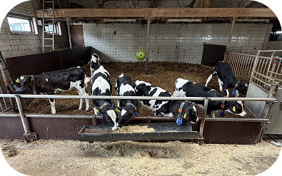

Boerderij Polderzicht
Boerderij Polderzicht is meer dan een boerderij. Geniet van een cappuccino, een lekkere lunch of een tosti in het Polderhuis en ontdek ondertussen het boerenleven. Op het erf kun je dieren bekijken, spelen en ervaren waar Boeren van Amstel melk vandaan komt.

